LakeScope › MN
Lake Mille Lacs today
Updated 2026-11-14 - Atlas Labs
Clear water, 46°F water, level steady, near normal, calm this morning.
Water level
1251.04 ft
USGS gauge 05284000 - 2026-11-14
7-day trend: steady (-0.02 ft). Compared with normal for this date: -0.4 ft (same weeks, 2016-2025).
Water clarity and algae
Clear water Last clear view: over 2 weeks ago. 3 cloudy passes since.
Surface temperature
46°F
seen from space on 2026-11-11

Ice
Open - 0% ice cover
Estimate from weather and satellite, not a measurement. Check the ice yourself before going on it.
Weather, next 3 days
| Day | Sky | High / low | Wind | Rain |
|---|---|---|---|---|
| Saturday | Sunny | 40 / 23°F | 5 mph S | 0% |
| Sunday | Mostly Sunny | 44 / 30°F | 10 mph S | 0% |
| Monday | Mostly Sunny | 49 / 37°F | 20 mph SSW | 0% |
Sunrise 07:14 - sunset 16:42 - Waxing crescent. National Weather Service.
Get the LakeScope app: alerts and the 3-D view of Lake Mille Lacs